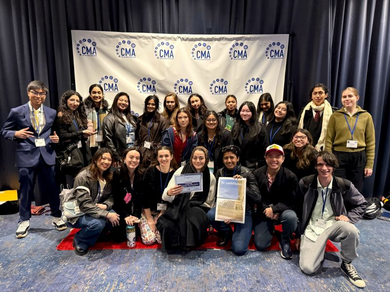

Eddy Basurto
Current college student with a passion in filmmaking, and also as the lead video editor at The Highlander Newspaper. This position has helped me learn how to make compelling stories for the news, meet deadlines, and work in the field of journalism. I feel like this experience is helping me prepare for a future in media and filmmaking.
In this role, I film, edit, and upload videos that are shown on the newspaper’s website and social media pages. I work with reporters to cover different stories, like local elections, community events, and human interest stories. My job is to operate cameras, record interviews, and gather footage that makes the story more interesting. I always try to make sure the videos are accurate and engaging so viewers want to watch and learn.
A lot of my work is editing videos using Adobe Premiere Pro. I add text, graphics, and sound to make the videos look professional. It can be challenging to finish everything on time, but I work hard to stay organized and efficient. I also help with the newspaper’s social media by uploading videos and live streaming events. This has helped the newspaper get more viewers online.
Besides my work at the newspaper, I love filmmaking as a hobby. I spend my free time working on my own projects, like short films and documentaries. This hobby pushes me to get better at filming, lighting, and editing. I enjoy trying new techniques and learning more about how to make videos look good and tell stories effectively.
I have also worked on film sets with other students and organizations. I make it a mission to be involved in my community, searching for any and all job opportunities to further expand my skills and love for the industry of filmmaking.
My love for filmmaking helps me make better videos for the news. I try to make my videos both informative and visually interesting by using some creative techniques. I think that combining my skills in filmmaking with my work in journalism helps me tell stories in a way that really connects with people. I want to keep learning new skills and find new ways to improve my videos.
This internship has also helped me build soft skills like managing my time, working with others, and staying calm under pressure. Working in a busy newsroom has taught me how to meet deadlines and handle multiple tasks. I’ve also learned how to communicate better with team members like reporters and editors. These experiences have made me more confident in my ability to handle different responsibilities.
Looking ahead, I want to keep working in media and filmmaking. I want to tell stories that matter and make an impact through videos. My time at The Highlander News has given me a good start, and I want to keep learning and growing in this field. I believe my passion, skills, and hard work can be a great fit for your team.
Experience
Lead Video Editor
• Created content for social medias
• Trained contributors and staff
• Experience with Adobe Suite, Davinci Resolve, and OBS
Videographer Volunteer
• Capturing video for film festival
• Working in new environments, constantly adjusting to new people
Social Media Coordinator
• Run promotional content for department
• Coordinate and discuss projects
• Edit content on Adobe and participate alongside the creative team
Education
Redlands East Valley High School
University of California Riverside
Portfolio
